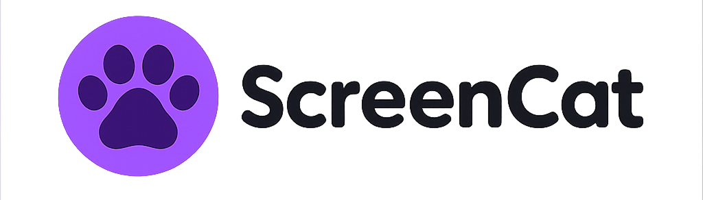

ScreenCat — твой экранный котик на Mac
Интерактивный питомец с AI, скинами и мини-играми. Работает оффлайн.

Интерактивный питомец с AI, скинами и мини-играми. Работает оффлайн.
Полностью оффлайн, без трекеров. Отвечает, наблюдает, адаптируется.
Лови мышку, играй в прятки. Кот реагирует на действия и побеждает скуку.
Меняй облик: от ретро до хай-тек. Покупай и настраивай под себя.
Кот болтает, шутит, философствует — и даже запоминает твои ответы.
Запоминает, когда ты его кормишь, и какое у него было настроение.
Базовая версия — да. Некоторые скины — платные.
Нет, кот работает полностью оффлайн.
Пока только macOS. Возможно в будущем.